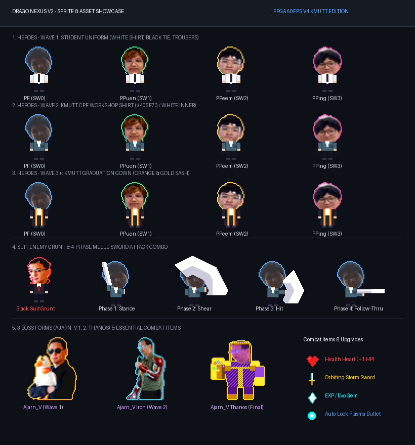

CPE KMUTT • HARDWARE SYNTHESIS PROJECT • PURE VERILOG RTL
VEEPIRE SURVIVORS
2D Roguelite Survival Action Game • Zero CPU • 60 FPS VGA Hardware Engine
NEXYS A7-100T
Artix-7 XC7A100T-1CSG324C
25.175 MHzVGA Pixel Clock
60 FPSZero-Lag Display
0 MHz CPU100% Logic Gates
16,070 LUTs25.35% Logic Area
+14.066 nsTiming Slack PASS
💡 บทนำสำหรับผู้เริ่มต้น (FPGA คืออะไร แตกต่างจากการเขียนโปรแกรมทั่วไปอย่างไร?)
ในการเขียนโปรแกรมทั่วไปบนคอมพิวเตอร์ (C++, Python, Unity) โปรแกรมจะทำงานแบบ ตามลำดับ (Sequential) โดย CPU จะดึงคำสั่ง (Instruction Fetch) ทีละบรรทัดมาประมวลผลผ่านระบบปฏิบัติการ (OS)
แต่โครงงานนี้สร้างบน FPGA (Field-Programmable Gate Array) ซึ่งเป็น ชิปวงจรรวมดิจิทัลที่ไม่มี CPU และไม่มี OS อยู่เลยแม้แต่น้อย!
โค้ดภาษา Verilog HDL ที่เราเขียนขึ้นไม่ได้ถูกนำไปรันเป็นคำสั่ง แต่ถูกแปลง (Synthesis & Implementation) กลายเป็น สายไฟและเกตตรรกะจริง (Physical Logic Gates, Flip-Flops, Multiplexers)
ที่เชื่อมต่อกันอยู่บนเนื้อซิลิคอน ทำงานแบบ ขนานพร้อมกัน 100% (Pure Concurrency) ทุกเสี้ยววินาทีของสัญญาณนาฬิกา!
สถาปัตยกรรมระดับฮาร์ดแวร์ (Pure RTL Architecture) & VGA 60 FPS EngineHardware Overview
1. การเรนเดอร์ภาพแบบ On-the-Fly (ไร้ Frame Buffer)
เกมคอมพิวเตอร์ทั่วไปจะใช้ RAM เก็บภาพทั้งเฟรม (Frame Buffer) แล้วจึงส่งออกหน้าจอ แต่ใน FPGA เรามีหน่วยความจำ BRAM จำกัด
เราจึงออกแบบวงจร VGA Beam Scanning ที่คำนวณและสร้างสีพิกเซลส่งออกพอร์ต VGA แบบ Real-time สดๆ พิกเซลต่อพิกเซล
ตามสัญญาณพิกเซลคล็อก 25.175 MHz (640×480 @ 60 Hz)
- Horizontal Timing: 640 Visible + 16 Front Porch + 96 Sync + 48 Back Porch = 800 Pixels
- Vertical Timing: 480 Visible + 10 Front Porch + 2 Sync + 33 Back Porch = 525 Lines
- Dual-Layer Alpha Blending: ผสมสไปรท์ตัวละคร พื้นหลัง และเอฟเฟกต์อาวุธแบบโปร่งแสงด้วยฮาร์ดแวร์ Combinational Logic
2. การทำงานแบบคู่ขนานระดับอิเล็กตรอน (Zero-Latency)
ทุกระบบในเกมทำงานพร้อมกันโดยไม่แย่งเวลาประมวลผล (No Context Switching):
- Game Physics & Movement: คำนวณเวกเตอร์ตำแหน่งผู้เล่น 2 คนและมอนสเตอร์ 16 ตัวพร้อมกันใน 1 clock cycle
- Hitbox Collision Detection: วงจร Comparator ตรวจจับระยะดาบ กระสุน และตัวละครทุกตัวพร้อมกันทันที
- Audio Synthesizer: วงจรสร้างคลื่นสี่เหลี่ยม (PWM Square Waves) 4 ช่องเสียงบรรเลงเพลง Chiptune พร้อมเอฟเฟกต์เสียง
- Dual-Controller UART Receiver: ถอดรหัสคำสั่งจากจอยสติ๊ก USB ผ่านบอร์ด ESP32 ด้วยความเร็ว 115,200 baud
ภาพรวมเกมเพลย์ • VeePire SurvivorsKMUTT Survivor Parody
🛡️ ระบบผู้เล่น 2 คน (Co-op)
รองรับการเล่นคู่ P1 และ P2 พร้อมกัน แบ่งหน้าที่โจมตีและเก็บเลเวล โดยแชร์หลอดอัปเกรด GEM ร่วมกัน หากเพื่อนล้มลงจะสลบชั่วคราวและฟื้นคืนชีพเมื่อจบ Wave!
⚔️ คอมโบดาบ & ปืน Auto-Lock
ฟันดาบ 4 จังหวะระยะกว้างพิเศษ + ใบมีดหมุน 360° ป้องกันตัว พร้อมปืนยิงเวทมนตร์อัจฉริยะที่ใช้ฮาร์ดแวร์คำนวณระยะทางเพื่อล็อคเป้าหมายศัตรูอัตโนมัติ 100%
🎓 ประตูด่านทดสอบ Logic Gate
เมื่อจบแต่ละ Wave ต้องไขปริศนา Truth Table ประตูดิจิทัล (AND, OR, XOR ฯลฯ) หากตอบถูกจะเปลี่ยนชุดเท่ๆ สู่ชั้นปีถัดไป หากตอบผิดจะพบกับ Ajarn_V ร่าง 2 สั่ง GO RETAKE!
คำถามเจาะลึกที่พบบ่อย (Q&A For Defense & Beginners)Hardware Fundamentals
❓ Q1: จากรูปถ่ายคนจริง (อาจารย์/นักศึกษา) เรานำใส่เข้าไปใน FPGA กลายเป็นตัวละครในเกมได้อย่างไร?
เนื่องจาก FPGA ไม่มีฮาร์ดดิสก์และไม่รองรับไฟล์รูปภาพ เช่น .png หรือ .jpg โดยตรง เราจึงต้องสร้าง Image Processing Toolchain เพื่อแปลงข้อมูลภาพให้อยู่ในรูปของตรรกะหน่วยความจำ (Hardware Memory Map) ดังนี้:
ขั้นตอนที่ 1: การประมวลผลรูปภาพล่วงหน้า (Python PIL)
- นำรูปถ่ายใบหน้าจริงมาตัดฉากหลังออกด้วยอัลกอริทึม BFS Flood-fill / Color Keying
- ย่อขนาดภาพให้อยู่ในสัดส่วนพิกเซลที่เหมาะสม (เช่น 32×32 หรือ 64×64 พิกเซล)
- ทำการ Quantization ลดทอนสีจาก TrueColor (24-bit RGB888) ให้เหลือ 12-bit RGB444 (แดง 4-bit, เขียว 4-bit, น้ำเงิน 4-bit รวม 4,096 สี) เพื่อประหยัดพื้นที่หน่วยความจำ
ขั้นตอนที่ 2: แปลงเป็นไฟล์ความจำและ BRAM Synthesis
- สคริปต์ Python จะแปลงค่าสีแต่ละพิกเซลเป็นเลขฐานสิบหก (Hexadecimal) บรรทัดละ 1 พิกเซล บันทึกเป็นไฟล์
.mem (Memory Initialization File)
- ในโค้ด Verilog เราเรียกใช้คำสั่ง
$readmemh("face_sprite.mem", rom_array); เพื่อบรรจุค่าสีลงใน Block RAM (BRAM Tile) ของชิป FPGA ในขั้นตอนสังเคราะห์วงจร
- เมื่อวงจร VGA กำลังสแกนพิกเซลผ่านพิกัดตัวละคร วงจรจะคำนวณ Address ของ BRAM แล้วดึงค่าสี 12-bit RGB444 ส่งตรงไปยังพอร์ต VGA ทันที!
// ตัวอย่างวงจร Verilog ROM ดึงพิกเซลจาก Block RAM (1 Clock Cycle Latency)
reg [11:0] sprite_rom [0:1023]; // 32x32 pixels = 1024 addresses (12-bit RGB444)
initial $readmemh("hero_face.mem", sprite_rom);
always @(posedge clk_25m) begin
pixel_color_out <= sprite_rom[{pixel_y[4:0], pixel_x[4:0]}]; // คำนวณ Address 10-bit
end
❓ Q2: ในฮาร์ดแวร์ดิจิทัลที่ไม่มีฟังก์ชัน rand() เราสร้างการสุ่มตำแหน่งมอนสเตอร์อย่างไร?
เราใช้เทคนิค LFSR (Linear Feedback Shift Register) ซึ่งเป็นวงจรกำเนิดตัวเลขสุ่มเทียมระดับฮาร์ดแวร์ (Hardware Pseudo-Random Number Generator) ที่มีประสิทธิภาพสูงสุด ทำงานด้วยหลักการทางคณิตศาสตร์ Galois Field ดังนี้:
โครงสร้างของ LFSR: ประกอบด้วย Flip-Flop เรียงต่อกันเป็น Shift Register เมื่อมีสัญญาณนาฬิกา ข้อมูลบิตจะเลื่อนไปทางขวา 1 ตำแหน่ง และบิตใหม่ที่จะถูกใส่เข้ามาที่หัวแถว (Feedback Bit) จะเกิดจากการนำบิตที่ตำแหน่งเฉพาะ (Taps) มากระทำทางตรรกะ XOR (⊕) กัน
พหุนามสุ่มความยาว 16 บิต (Maximal-Length Polynomial):
$$P(x) = x^{16} + x^{14} + x^{13} + x^{11} + 1$$
วงจรนี้จะสร้างลำดับตัวเลขสุ่มที่ ไม่ซ้ำกันเลยถึง 65,535 สเตจ ($2^{16}-1$) ก่อนจะวนรอบกลับมาที่เดิม โดยกินพื้นที่ฮาร์ดแวร์เพียง 16 Flip-Flops และ XOR Gates ไม่กี่ตัว!
// โมดูลวงจรสุ่ม LFSR 16 บิตใน Verilog
module lfsr_16 (
input wire clk,
input wire rst_n,
output reg [15:0] rnd_val
);
wire feedback = rnd_val[15] ^ rnd_val[13] ^
rnd_val[12] ^ rnd_val[10];
always @(posedge clk or negedge rst_n) begin
if (!rst_n)
rnd_val <= 16'hACE1; // Non-zero Seed
else
rnd_val <= {rnd_val[14:0], feedback};
end
endmodule
❓ Q3: ตรวจจับการชน (Collision Detection) ในฮาร์ดแวร์ทำอย่างไรเมื่อไม่มี OOP หรือ Vector Math?
ในโปรแกรมซอฟต์แวร์มักใช้สมการวงกลม $\sqrt{\Delta x^2 + \Delta y^2} < r$ ซึ่งกินเวลาคำนวณและต้องการวงจรคูณและถอดรูทที่ซับซ้อนมาก ใน Verilog เราใช้ Axis-Aligned Bounding Box (AABB) และ Manhattan Distance แทน ซึ่งสร้างจากวงจรลบและเปรียบเทียบ (Subtractor & Comparator) ที่ทำงานเสร็จสิ้นภายใน 1 Clock Cycle (40 นาโนวินาที) เท่านั้น!
wire hit_enemy = (bullet_x >= enemy_x - 12) && (bullet_x <= enemy_x + 12) &&
(bullet_y >= enemy_y - 12) && (bullet_y <= enemy_y + 12);
เนื้อเรื่อง & วิวัฒนาการเครื่องแต่งกายนักศึกษา (Academic Lore)Game Narrative
📖 ธีมเรื่องราว: มหาสงครามเอาชีวิตรอดในรั้วมหาวิทยาลัย
ผู้เล่นจะได้รับบทเป็นนักศึกษาภาควิชาวิศวกรรมคอมพิวเตอร์ (CPE KMUTT) ที่ต้องต่อสู้เอาชีวิตรอดจากกองทัพ "กีกี้ผู้ตรวจการ (Geekie Enforcers)"
และเผชิญหน้ากับลาสบอสผู้ทรงอำนาจ "อาจารย์ V (Ajarn_V)" ผู้คอยตัดสินผลการเรียนและแจกเกรด F ให้กับนักศึกษาที่ไม่ผ่านเกณฑ์!
เป้าหมายคือการฝ่าฟันอุปสรรคทั้ง 10 Wave เก็บสะสมคะแนน GEM อัปเกรดอาวุธ ตอบคำถามประตูดิจิทัลให้ถูกต้องเพื่อเลื่อนชั้นปี และพิชิตอาจารย์ V เพื่อคว้าใบปริญญาบัตรเกียรตินิยม!
👔 วิวัฒนาการเครื่องแต่งกายตามระดับ Wave (Progression)
- Wave 1 (เฟรชชี่ปี 1): ชุดนักศึกษาถูกระเบียบ เสื้อเชิ้ตขาวแขนยาว ผูกเนกไท กางเกงสแล็คสีดำ แสดงถึงความไร้เดียงสาในการเข้าเรียนเทอมแรก
- Wave 2 (วิศวกรคอมพ์ปี 2-3): สวม "เสื้อช็อปวิศวะคอมพิวเตอร์ มจธ." สีน้ำเงินอมเทา (#405F73) ทับเสื้อยืดขาวด้านใน บ่งบอกถึงการผ่านศึกโครงงานฮาร์ดแวร์
- Wave 3+ (บัณฑิตเกียรตินิยม): สวม "ชุดครุยวิทยฐานะ มจธ." เต็มยศ แถบสีแดงเลือดหมู-ทอง พร้อมเข้าสู่สมรภูมิสุดท้ายเพื่อจบการศึกษา!
พรีวิวสไปรท์ตัวละครและศัตรูในเกม (Sprite Architecture)Hardware Assets

ภาพจำลองชุดสไปรท์ระดับฮาร์ดแวร์: ใบหน้าความละเอียดสูง + ลำตัวแบ่งตาม Wave + อาวุธดาบ 4 จังหวะ + มอนสเตอร์สูทดำ + บอส Ajarn_V 3 ร่าง
👾 กีกี้ผู้ตรวจการ (Geekie)
มอนสเตอร์ลูกกระจ๊อก สวม ชุดสูทสีดำ เสื้อเชิ้ตขาวด้านใน เดินเข้าหาผู้เล่นและยิงกระสุนรบกวนอย่างรวดเร็ว ได้รับการปรับแต่งความเร็วยิงให้ท้าทายในเวอร์ชันล่าสุด
🦆 บอส Ajarn_V ร่าง 1 (Giant Duck)
ร่างเปิดตัวด้วยมาสคอตเป็ดเหลืองขนาดยักษ์ โจมตีด้วยการพุ่งชนและปล่อยลูกพลังกระจายรอบทิศทาง เป็นบททดสอบแรกในการควบคุมระยะการเดินของผู้เล่น
⚡ บอส Ajarn_V ร่าง 3 (Thanos)
ร่างสุดยอดสวมถุงมือ Infinity Gauntlet พร้อมระเบิดพลังดีดนิ้ว โจมตีเป็นคลื่นลูกไฟรุนแรง มีเกราะหนา และมีระบบดีดสะท้อนผู้เล่นหากเข้าใกล้เกินไป!
ระบบการต่อสู้ & ปริศนาประตูดิจิทัล (Combat & Logic Mechanics)Gameplay Systems

การโจมตีระยะประชิดด้วยดาบ 4 จังหวะ (Extended Reach & Slash Arc)

ระบบปืนกลเวทมนตร์ล็อคเป้าหมาย 100% พร้อมการปะทะบอส Ajarn_V
⚔️ ระบบดาบ 4 จังหวะ & ปืน Auto-Lock 100%
- Extended Reach Melee: ปรับแต่งความยาวใบมีดให้มองเห็นวงฟันชัดเจน ตัดเอฟเฟกต์สีรบกวนตาออก เหลือเพียงจังหวะดาบคมกริบ 4 ทิศทาง (บน, ล่าง, ซ้าย, ขวา)
- Blade Nova: อัปเกรดคมมีดหมุนวนรอบตัวผู้เล่น สร้างอาณาเขตป้องกันตัวเมื่อถูกมอนสเตอร์รุมล้อม
- Hardware Target-Lock Gun: วงจร Priority Multiplexer ค้นหาพิกัดศัตรูที่ใกล้ที่สุดแบบ Real-time และยิงกระสุนตรงเป้าหมาย 100% โดยผู้เล่นไม่ต้องเล็งเอง
🛡️ ระบบสมดุลการต่อสู้กับบอส (Boss Balance)
- Melee Repulsion Shockwave: หากผู้เล่นพยายามยืนประชิดฟันบอสมากเกินไป บอสจะปล่อยคลื่นกระแทกดีดผู้เล่นกระเด็นออกไปไกลพร้อมติดสถานะสตั๊น (Anti-Spam)
- Gradual Healing & Recovery: เลือดจะรีเจนทีละนิดเฉพาะเมื่ออยู่นอกระยะการต่อสู้ (Out-of-Combat) เป็นเวลานานพอเท่านั้น
- Incapacitated Co-op State: หาก P1 หรือ P2 เลือดหมด จะนอนสลบลงกับพื้น ต้องรอให้อีกคนเคลียร์ Wave นั้นให้สำเร็จจึงจะฟื้นคืนชีพ
ประตูด่านตรรกศาสตร์ (Digital Logic Gate Checkpoints)Educational Gates
🚪 ประตูทดสอบ Logic Gate (AND, OR, XOR, NAND, NOR)
เมื่อผู้เล่นกำจัดศัตรูในแต่ละ Wave จนหมด ประตูคัดกรองจะปรากฏขึ้นพร้อมแสดงสมการเกตตรรกศาสตร์ เช่น $A \cdot B = 1$ หรือ $A \oplus B = 0$
ผู้เล่นต้องกดเลือกประตูทางออกที่ให้ค่าความจริงถูกต้อง
🎉 เมื่อตอบคำถามถูกต้อง: ระบบจะตัดเข้าฉาก Outfit Change Cutscene แสดงตัวละครแปลงร่างเปลี่ยนชุดสู่ระดับชั้นปีถัดไปอย่างภาคภูมิใจ!
⚠️ บทลงโทษเมื่อตอบผิด: แจกเกรด F & GO RETAKE !!
หากผู้เล่นตอบคำถามผิด หรือพยายามกดสแปมปุ่มเพื่อข้ามด่าน:
- หน้าจอจะขึ้นแถบคาดสีเหลืองดำ Caution สไตล์ป้ายเตือนอันตราย
- ภาพ Ajarn_V ร่าง 2 ขนาดยักษ์ จะโผล่ขึ้นมากลางหน้าจอด้วยสีหน้าโกรธจัด
- ตัวอักษรสีแดงขนาดใหญ่แสดงข้อความ "GRADE F - GO RETAKE !!"
- ผู้เล่นจะถูกส่งกลับไปเริ่มเล่น Wave นั้นใหม่อีกครั้งทันที!
สถาปัตยกรรมโมดูลฮาร์ดแวร์ & ผลการสังเคราะห์วงจรHardware Synthesis
📁 โครงสร้างโมดูลระดับ Verilog RTL
drago_nexus_v2_top: โมดูลแม่ข่าย จัดการ Clock Domain, Reset, I/O Pinoutgame_engine_v2: Finite State Machine (FSM) ควบคุมสถานะเกม, การเกิดมอนสเตอร์, ตรวจสอบการชนvga_renderer_v2: เรนเดอร์กราฟิก ผสมสีพิกเซล 12-bit RGB444 แบบ On-the-flyvga_sync: สร้างสัญญาณ HSYNC/VSYNC ที่ความถี่ 25.175 MHz สำหรับ 640×480 @ 60Hzaudio_synth_v2: ซินธิไซเซอร์เสียง Chiptune 4 ช่องเสียง + PWM Mono DACuart_joy_rx: รับค่าปุ่มกด Dual Gamepad ผ่านพอร์ต UART 115,200 baudacl_tilt: เชื่อมต่อชิปตรวจจับความเร่ง ADXL362 ผ่าน SPI สำหรับควบคุมตัวละครด้วยการเอียงบอร์ด
🎵 ระบบเสียง 4-Voice Chiptune Audio Synthesizer
วงจรเสียงสร้างสัญญาณ Pulse Width Modulation (PWM) ความถี่สูง ขับออกสู่ช่อง Audio Jack 3.5mm ของบอร์ด Nexys A7:
- Voice 1 & 2 (Melody & Harmony): คลื่นสี่เหลี่ยม Duty cycle 50% สำหรับเสียงเมโลดี้หลัก
- Voice 3 (Bass Arpeggio): คลื่นเบสทุ้มต่ำสร้างจังหวะดนตรีสไตล์ 8-bit Retro
- Voice 4 (SFX / White Noise): ใช้ LFSR สร้างสัญญาณเสียงสุ่ม สำหรับจำลองเสียงดาบฟัน, กระสุนยิง, และเสียงระเบิด
ผลการวิเคราะห์ทรัพยากรบนชิป (FPGA Resource Utilization)Xilinx Vivado Report
| Resource Type |
Utilization |
Available on XC7A100T |
Utilization % |
Status |
| Slice LUTs (Logic) |
16,070 |
63,400 |
25.35% |
PASS (Optimal) |
| Slice Registers (Flip-Flops) |
4,453 |
126,800 |
3.51% |
PASS (Lightweight) |
| Block RAM Tile (RAMB36E1) |
20.5 |
135 |
15.19% |
PASS (High Margin) |
| DSP48E1 Slices (Math) |
6 |
240 |
2.50% |
PASS (Ultra-low) |
| Worst Negative Slack (WNS) |
+14.066 ns |
0.000 ns (Required) |
Timing Margin |
MET TIMING CLOSURE |
ตารางการควบคุม (Hardware Controls Mapping)Dual Controller & Board I/O
🎮 Dual USB Gamepad (ผ่าน UART Bridge)
| D-Pad / Left Stick | เคลื่อนที่ 8 ทิศทาง (ผู้เล่น 1 หรือ ผู้เล่น 2) |
| Button A / Cross | โจมตีระยะประชิดด้วยดาบ (Melee Swing) |
| Button B / Circle | ยิงปืนเวทมนตร์ (Auto-Lock Spell Shot) |
| Button X / Square | เปิดใช้งานเกราะหมุนป้องกันตัว (Nova Shield) |
| Start / Select | หยุดเกมชั่วคราว (Pause) / ย้อนกลับเมนูหลัก |
🎛️ ปุ่มและสวิตช์บนบอร์ด Nexys A7
| BTNC (ปุ่มกลาง) | เริ่มเกม / ยืนยันคำตอบหน้าประตูทดสอบ |
| BTNU/D/L/R | เคลื่อนที่ตัวละคร P1 (Up, Down, Left, Right) |
| SW[0] (สวิตช์ 0) | เปิดโหมดเล่น 2 คน (Co-op 2-Player Mode) |
| SW[1] (สวิตช์ 1) | เปิดระบบตรวจจับการเอียงบอร์ด (Tilt Motion) |
| CPU_RESETN | รีเซ็ตระบบฮาร์ดแวร์ทั้งหมด (Master Reset) |